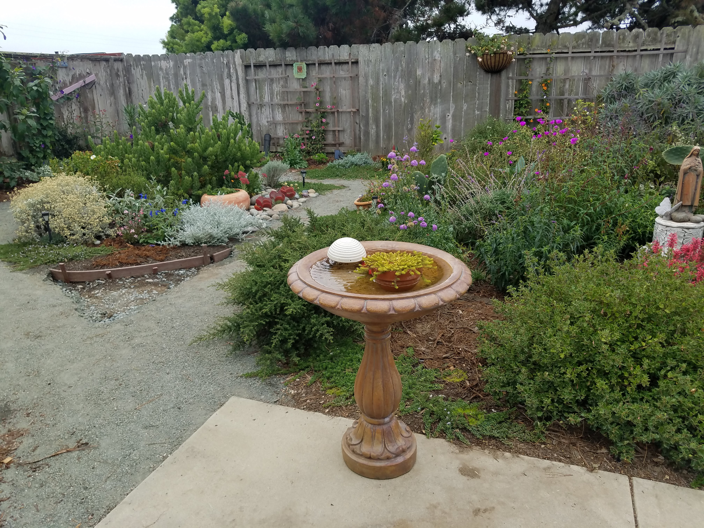

My garden is in the coastal town of Half Moon Bay, California along the Bay Area's peninsula.
I have done little to nothing to amend the soil in my garden. The soil is clayey and my plants fare well. When I feel like being fancy I will do a 50/50 blend of my soil with fresh organic compost. Plants that need more acidic soil may get a 50/50 mix with peat moss and plants that need more drainage will get planted above the existing soil line or in a more elevated part of the garden. In my garden plants that need the most sun will be planted along a south-facing wall and vice-versa.